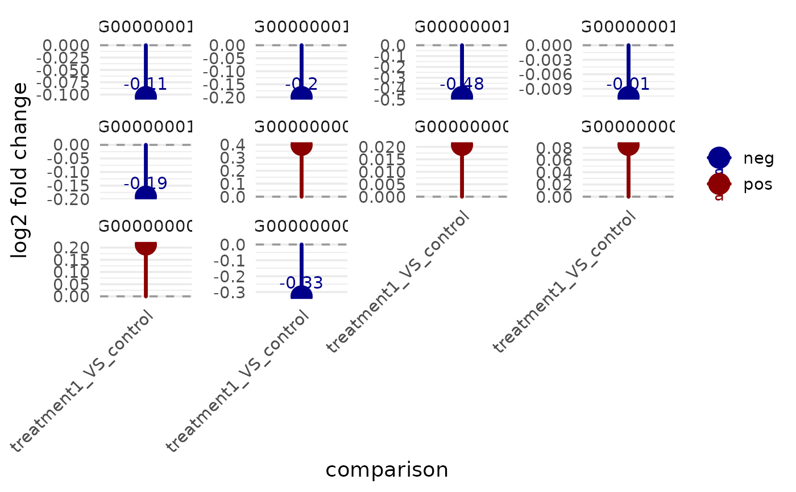
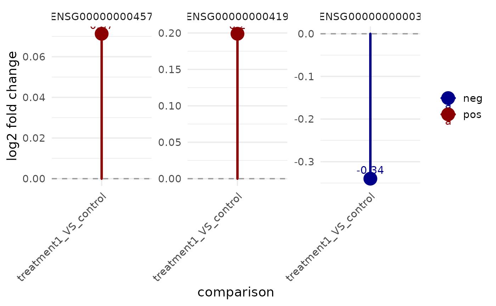

Fold-change plotting helpers (overview)
Source:R/bioccheck_roxygen_fixes.R, R/viz_related.R
get_foldchange_lollipop.RdOne-stop doc for fold-change plots:
get_foldchange_barplot(): log2FC by comparison (bars).get_foldchange_boxplot(): log2FC distributions per comparison (boxes).get_foldchange_lollipop(): log2FC stems/dots; supports 1–2 comparisons.get_foldchange_lineplot(): log2FC trajectories across comparisons (optional clustering).
Usage
get_foldchange_lollipop(
x,
sample_comparison,
genes = NULL,
sort_by = c("input", "log2fc", "abs_log2fc"),
palette = NULL,
point_size = 6,
line_size = 1.2,
label = TRUE,
label_digits = 2,
display_id = NULL,
display_from = NULL,
display_orgdb = NULL,
dodge_width = 0.5,
facet_scales = "free_y",
facet_nrow = NULL,
facet_ncol = NULL,
facet_by = c("auto", "gene", "comparison", "none")
)Arguments
- x
A
VISTAobject.- sample_comparison
Character vector of length 1 or 2 naming the comparison(s) to plot (must exist in
metadata(x)$de_results).- genes
Optional character vector of gene IDs to include. When
NULL, all genes in the specified comparison(s) are shown.- sort_by
How to sort genes on the y-axis:
"input"(use supplied order),"log2fc"(descending log2FC; for two comparisons uses the first comparison), or"abs_log2fc"(descending max abs log2FC across comparisons).- palette
For a single comparison, named vector of colors for
"pos","neg", and"zero"sign classes (set toNULLto disable color by sign). For two comparisons, a named or unnamed vector of colors with one entry per comparison (defaults to a qualitative palette).- point_size
Numeric size of dots.
- line_size
Numeric size of stems (linewidth).
- label
Logical; draw numeric labels next to the dots.
- label_digits
Integer; digits to show in labels when
label = TRUE.- display_id
Optional column in
rowData(x)used to interpretgenesand to label plotted genes.- display_from
Optional source ID type for mapping when
display_idis not present inrowData(x).- display_orgdb
Optional
OrgDbobject used for identifier mapping whendisplay_idis not present inrowData(x).- dodge_width
Horizontal separation between comparisons when plotting two comparisons on the same axis.
- facet_scales
Facet scales argument passed to
facet_wrap()whenfacet_by != "none"(default"free_y").- facet_nrow, facet_ncol
Optional layout passed to
facet_wrap()when faceting.- facet_by
Faceting mode:
"auto"(default),"gene","comparison", or"none".
Details
Shared arguments: x (VISTA with DE results), sample_comparisons/sample_comparison,
genes, display_id for label mapping, sort_by (where supported),
faceting controls (facet_*), and comparison colours pulled from
Plot log2 fold changes as a lollipop chart (one or two comparisons)
Extracts log2 fold changes from stored differential expression results and plots them as stems and dots, with labels and a zero reference line. You can optionally provide two comparisons; in that case both comparisons are drawn side-by-side, coloured by comparison.
Examples
v <- example_vista()
comp <- names(comparisons(v))[1]
genes <- head(as.character(comparisons(v)[[comp]]$gene_id), 10)
p <- get_foldchange_lollipop(v, sample_comparison = comp, genes = genes)
print(p)

vista <- example_vista()
comp_name <- names(comparisons(vista))[1]
genes <- rownames(vista)[seq_len(3)]
get_foldchange_lollipop(vista, sample_comparison = comp_name, genes = genes)
